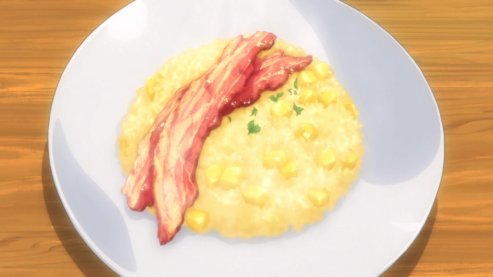
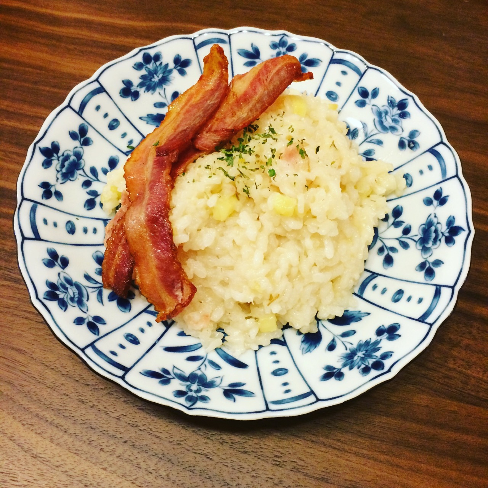

Apple Risotto


Description
This dish is eaten as breakfast... supposedly
Ingredients
- 1/2 Apples
- 1/4 of Onion (Sauteed)
- 1/2 cup of Rice
- 1 cup of Apple Juice
- 1 cup of Water
- 1 teaspoon of Lemon Juice
- 1 teaspoon of Granulated Consommé
- 2 tablespoons of White Wine
- 2 tablespoons of Butter
- 4 slices of Thick-Cut Bacon
- Salt & Pepper
- Powdered Cheese (Optional)
Steps
- Cook the bacon in a frying pan until it's crispy and set to the side.
- Peel the apple and dice it in cubes of 1cm³.
- Mince the onion.
- Heat the butter in a frying pan and sauté the onions.
- Add the rice to (4) and cook until it's transparent.
- Add the white wine to (5) and cook it until the alcohol burns off.
- Mix the apple juice, water and consommé. Slowly add this 1/8 cup at a time to (6) simmering on low heat for 15 minutes (until all the liquid is absorbed).
- Add the apple dices and lemon juice to (7) and season it to taste with salt and pepper.
- Place (8) on a plate and top it with (1).
- Top it up with POWDERED CHEESE
- SERVE
Return to homepage